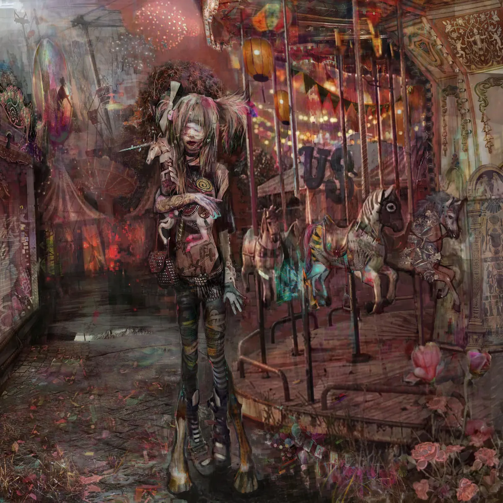

Publié le 8 octobre 2026

Le 30 septembre 2026, Ptite Soeur et le producteur neophron ont publié l'album collaboratif NODA: le monde et les humains. Ce projet de seize titres s'impose immédiatement comme l'une des sorties les plus radicales de l'underground français. Avant ses concerts parisiens dès le 12 octobre 2026, l'artiste y impose son rap saturé et son digicore.
Pourquoi l'album NODA marque-t-il un tournant pour Ptite Soeur ?
NODA: le monde et les humains marque l'affirmation d'une identité artistique totale. Elle y mêle mélodies intimes, saturations industrielles et textes habités par un désir de vivre. Ce projet de seize morceaux s'éloigne des structures classiques pour proposer une expérience sensorielle viscérale.
Le duo formé par Ptite Soeur et neophron n'en est pas à son coup d'essai. Après leur premier album commun NOUVELLE ÉCONOMIE en 2023, ils explorent ici une noirceur brute. Les productions de neophron sont de véritables décharges de tension industrielle, pleines de basses distordues. La voix de Ptite Soeur navigue dans ce chaos avec une facilité déconcertante. Elle passe de murmures fragiles à des cris de rage métallique sur seize morceaux. Le résultat est parfois difficile d'accès, voire étouffant sur certains titres. Pourtant, la sincérité artistique de la rappeuse balaie instantanément tous les doutes. C'est de l'art brut, conçu pour faire vibrer les tripes avant les tympans.
Comment la scène digicore redéfinit-elle les codes du rap français ?
La scène digicore repousse les frontières du rap traditionnel en y intégrant des textures sonores agressives. Celles-ci sont issues de l'hyperpop et de la culture Internet. À travers des voix modifiées et des rythmiques déstructurées, elle offre un espace d'expression unique pour les minorités de l'underground.
Le digicore n'est plus un simple micro-genre confiné sur Soundcloud. En quelques années, des artistes comme Ptite Soeur ont prouvé que cette musique pouvait remplir de vraies salles. La rappeuse a déjà réuni plus de 9 000 personnes lors du Grünt Festival l'an dernier. Cette montée en puissance témoigne d'un renouvellement profond du public rap. Les auditeurs recherchent aujourd'hui des propositions radicales, loin des formats calibrés pour les radios commerciales. Pour en savoir plus sur ces spectacles, consultez notre sélection de concerts rap à Paris. Vous y trouverez toutes les dates importantes de cette fin d'année.
| Album | Année | Style principal | Particularité |
|---|---|---|---|
| NOUVELLE ÉCONOMIE | 2023 | Trap industrielle | Premier projet long avec neophron |
| PRETTY DOLLCORPSE | 2025 | Rap, Rock, Indus | Top 10 des albums SNEP en France |
| NODA: le monde et les humains | 2026 | Digicore, Dark Electro | Seize morceaux axés sur l'espoir et l'amour |
À quoi faut-il s'attendre pour les concerts à La Cigale ?
Les deux concerts prévus à La Cigale s'annoncent comme une expérience live immersive et d'une intensité physique rare. Ptite Soeur y défendra son nouvel album avec une scénographie sombre, fidèle à son imagerie numérique et industrielle.
La scène est le véritable révélateur de cette musique extrême. Les morceaux de NODA prennent une autre dimension lorsqu'ils sont joués à un volume assourdissant. Le premier rendez-vous est fixé au 12 octobre 2026, suivi d'une seconde date le 1er novembre 2026. Ces shows parisiens s'annoncent complets, preuve de l'engouement suscité par cette mouvance. Si vous n'habitez pas la capitale, gardez un œil sur notre agenda des concerts rap. La scène alternative française se déplace activement dans tout le pays. Ptite Soeur s'impose comme la figure de proue d'une génération sans compromis.